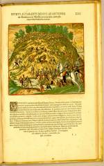

Girolamo Benzoni, Americae pars quinta secundae sectionis Hispanorum [...]. [Frankfurt am Main], Th. de Bry, 1595. -- (1368 A 10)
Het veroveren van gebieden in het verre Amerika ging, zoals bekend, niet zonder slag of stoot. Ook het handhaven van de orde was voor de Europese veroveraars een voortdurende zorg. Al moest de autochtone bevolking doorgaans het onderspit delven, toch waren er gevallen dat zij zich succesvol tegen de usurpators kon verdedigen. Hier is een geslaagde krijgslist van Mexicaanse Indianen in beeld gebracht. Pedro Alvarado, een legercommandant, is door Antonio de Mendoza de provincie in gestuurd. Onderweg krijgt hij te horen dat een groep Indianen -- Xaliscani worden ze hier genoemd -- de Spanjaarden had aangevallen, waarbij er nogal wat waren gedood.
Er volgt uiteraard een strafexpeditie, maar die loopt niet goed af. De Indianen hebben zich -- zo wordt ons getoond -- bij het dorp Nochistlan in Nueva Galicia op een heuvel verschanst. Wanneer de soldaten van Alvarado met het bestormen van de heuvel beginnen, stellen de Xaliscani hun verdedigingsmiddel in werking: hele bomen met eraan vastgebonden rotsblokken rollen onverhoeds naar beneden, de omhoogrennende en -rijdende soldaten verpletterend.
Ook Alvarado zelf wordt dodelijk getroffen. In de explicatieve tekst bij de prent wordt in de slotzin op zijn heldhaftigheid gezinspeeld: toen men hem, vlak voor hij stierf, vroeg waar hij pijn voelde, antwoordde hij: ‘In mijn ziel.’ Door inkleuring met de hand hebben de gravures in dit exemplaar van Benzoni’s boek over Amerika een grote levendigheid gekregen. Voor de getoonde plaat geldt: het feit dat er een abnormale oorlogshandeling moest worden weergegeven heeft veroorzaakt dat er een ongemeen levendige versie van de gruwelijke episode ontstond -- al ontbreekt de galopperende veldheer met zijn adjudant, die het strijdgewoel overziet (en die in veel zestiende- en zeventiende-eeuwse oorlogsprenten gemeengoed zou worden), niet. De aquarellist heeft, zo blijkt uit de gebruikte kleuren, verondersteld dat we Alvarado twee keer zien afgebeeld: rechts als de apart gestelde aanvoerder en links terwijl hij met zijn metgezel naar boven rijdt. In de ongekleurde versie moet dat niet in alle opzichten duidelijk zijn geweest, maar de ‘interpretatie’ van degene die de prent kleurde, is in overeenstemming met toenmalig gebruik: één en dezelfde persoon kan desgewenst meermalen in beeld verschijnen.
| vorige pagina | top pagina |